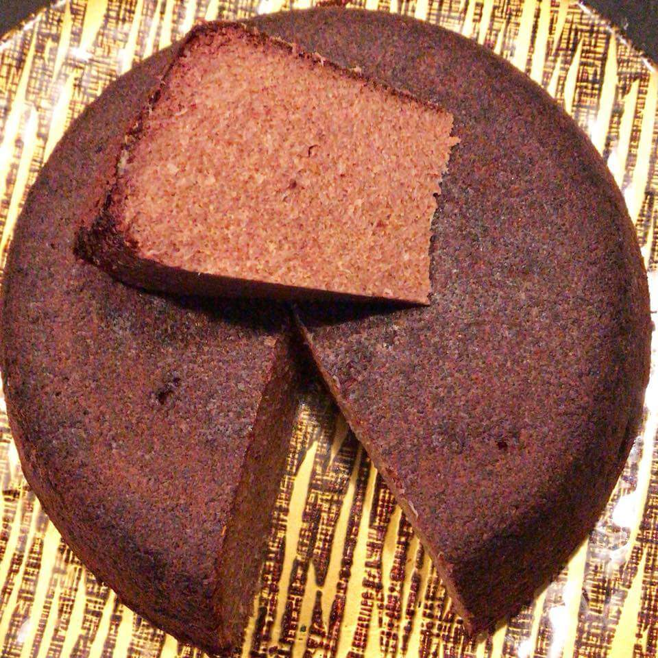

Chikanda-African Polony

Ingredients
- 6 cups water about 200ml each cup
- 1 Teaspoon soda (heaped)
- 3/4 cup ground chikanda powder about 150ml mark on your cup
- 3 cups pounded groundnuts
- 2 Teaspoons salt (level)
- 1 pinch chili to taste(optional)
Instructions
- In your pot mix cold water, groundnuts, soda and salt. Put the pot on the stove and continue to stir until boiled. When it starts boiling, slowly add chikanda powder and optional chilli powder whilst stirring. As you continue to stir, it will get firmer and firmer. In a separate bowl, Mix three teaspoons of groundnuts with 1 pinch of soda in 5 tablespoons of water. Add this mixture to your pot slowly as you continue to stir your firming chikanda. You will know it is ready for the oven when your mixture doesn’t stick to the cooking stick.
- Put mixture in oven proof container – ideally a metal pot. Shape it with a wet spoon like you would nshima. Place in the oven at 180’C for 20-30 minutes. Test with a toothpick or knife to see that nothing sticks.
- After it cools, remove from pot, cut off the top and turn it upside down for a more rounded and symmetrical look.